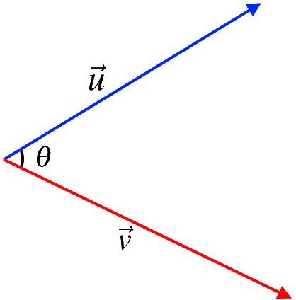

4.6. The Dot Product#
4.6.1. Dot Product#
The dot product of two vectors \(\vec{u}=\begin{bmatrix} u_1 & \dots & u_n \end{bmatrix}^T \in \mathbb{R}^n\) and \(\vec{v}=\begin{bmatrix} v_1 & \dots & v_n \end{bmatrix}^T \in \mathbb{R}^n\) is shown with \(\vec{u} \bullet \vec{v}\) and defined as follows.
The dot product is also called the scalar product and sometimes inner product.
Example: Find \(\vec{u} \bullet \vec{v}\) if \(\vec{u} =\begin{bmatrix} 3 & 13 & 3 \end{bmatrix}^T\) and \(\vec{v} =\begin{bmatrix} 17 & 0 & -1 \end{bmatrix}^T\). \(\vec{d} =\begin{bmatrix} 2 & 2 & 1 \end{bmatrix}^T\).
Solution: \(\vec{u} \bullet \vec{v}= \begin{bmatrix} 3 \\ 13 \\ 3 \end{bmatrix} \bullet \begin{bmatrix} 17 \\ 0 \\ -1 \end{bmatrix}=(3)(17)+(13)(0)+(3)(-1)=48.\)
Assume that \(\vec{u}\), \(\vec{v}\), and \(\vec{w}\) are vectors in \(\mathbb{R}^n\) and \(k, p\) be real numbers. The following properties are valid for the dot product (inner product).
\(\vec{u} \bullet \vec{v}= \vec{v} \bullet \vec{u}\),
\(\vec{u} \bullet \vec{u} \geq 0\),
\(\vec{u} \bullet \vec{u}=0\) if and only if \(\vec{u} = \vec{0}\),
\((k\vec{u}+ p\vec{v}) \bullet \vec{w} = k(\vec{u}\bullet \vec{w})+ p(\vec{v}\bullet \vec{w})\),
\(\vec{u}\bullet (k\vec{v}+ p \vec{w}) = k(\vec{u}\bullet \vec{v})+ p(\vec{u}\bullet \vec{w})\),
\(\|\vec{u}\|^2=\vec{u} \bullet \vec{u}\).
From the above Theorem, we have \(\|\vec{u}\|^2=\vec{u} \bullet \vec{u}\). Therefore, the length of vector \(\vec{u}\) can also be found using
For \(\vec{v}\), \(\vec{w} \in \mathbb{R}^n\), the following two inequalities hold:

The first one is called the Triangle Inequality.
4.6.2. The Included Angle#
For two vectors \(\vec{u}\) and \(\vec{v}\), the included angle is the angle available between these two vectors and is given by \(\theta\) such that \(0 \leq \theta \leq \pi\).
{kind=link}
For two vectors \(\vec{u}\) and \(\vec{v}\) in \(\mathbb{R}^n\) and their included angle \(\theta\), the following equation is valid.
Example: Find the angle between \(\vec{u}=\begin{bmatrix}1 \\ 0\end{bmatrix}\) and \(\vec{v}=\begin{bmatrix}1 \\ 1\end{bmatrix}\).
Solution: From the above theorem,
Therefore, \(\theta=\pi/4\).
Two nonzero vectors \(\vec{u}\) and \(\vec{v}\) are perpendicular when their dot product is zero. That is,
Example: Consider the triangle \(ABC\) with vertices \(A=(1,1,-1)\), \(B=(2,3,0)\) and \linebreak \(C=(1,0,3)\). Is \(ABC\) a right triangle?
Solution:

First, let’s evaluate \(\overrightarrow{AB}\), \(\overrightarrow{AC}\) and \(\overrightarrow{BC}\).
\(\overrightarrow{AB}\) and \(\overrightarrow{AC}\) are perpendicular if \(\overrightarrow{AB}\bullet\overrightarrow{AC}=0\). Thus, to have \(\overset{\triangle}{ABC}\) as a right triangle, we need to have one of the following dot products zero. However,
Therefore,
Therefore, \(\overset{\triangle}{ABC}\) is not a right triangle.
Example: Find the shortest distance from \(P=(3,2,-1)\) to the line
Moreover, find the point \(Q\) on \(L\) that is closest to \(P\).
Solution:

The shortest distance from a point \(P\) to a line \(L\) always makes a right angle. Here, we have \(\vec{d}=\begin{bmatrix}2&-1&-2\end{bmatrix}^T\) and \(P=(3,2,-1)\). We need to find the point \(Q\) on \(L\) that is closest to \(P\). We do not know the point \(Q\); however, we know that \(Q\) is on \(L\). Therefore,
As a result,
Since \(\overrightarrow{PQ}\) and \(\vec{d}\) are perpendicular (the angle between \(\overrightarrow{PQ}\) and \(\vec{d}\) is the right angle),
It follows that,
Hence, \(t_0=1\). As a result,
and
Refrences
Kuttler, Kenneth. “A First Course in Linear Algebra (Lyryx).” (2018).
Nicholson, W. Keith. “Linear Algebra with Applications (Lyryx).” (2018).